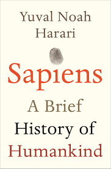

Martin Bragard
Student @Le Wagon
After 2 years of boring professional life, I wanted to start something new: coding. For this reason, I am excited to join le Wagon bootcamp.
Reach me hereMy Favorite Books

|
Black swanA black swan is a highly improbable event with three principal characteristics: It is unpredictable; it carries a massive impact; and, after the fact, we concoct an explanation that makes it appear less random, and more predictable, than it was. The astonishing success of Google was a black swan; so was 9/11. For Nassim Nicholas Taleb, black swans underlie almost everything about our world, from the rise of religions to events in our own personal lives. |
|  |
Sapiens. A brief history of human kind100,000 years ago, at least six human species inhabited the earth. Today there is just one. Us. In Sapiens, Dr Yuval Noah Harari spans the whole of human history, from the very first humans to walk the earth to the radical – and sometimes devastating – breakthroughs of the Cognitive, Agricultural and Scientific Revolutions. Drawing on insights from biology, anthropology, palaeontology and economics, he explores how the currents of history have shaped our human societies, the animals and plants around us, and even our personalities. Have we become happier as history has unfolded? Can we ever free our behaviour from the heritage of our ancestors? And what, if anything, can we do to influence the course of the centuries to come? Bold, wide-ranging and provocative, Sapiens challenges everything we thought we knew about being human: our thoughts, our actions, our power ... and our future. |

|
Black box thinkingAn eye-opening, Gladwellian look at the power of a positive attitude toward failure and its profound impact on our success in any field.. |